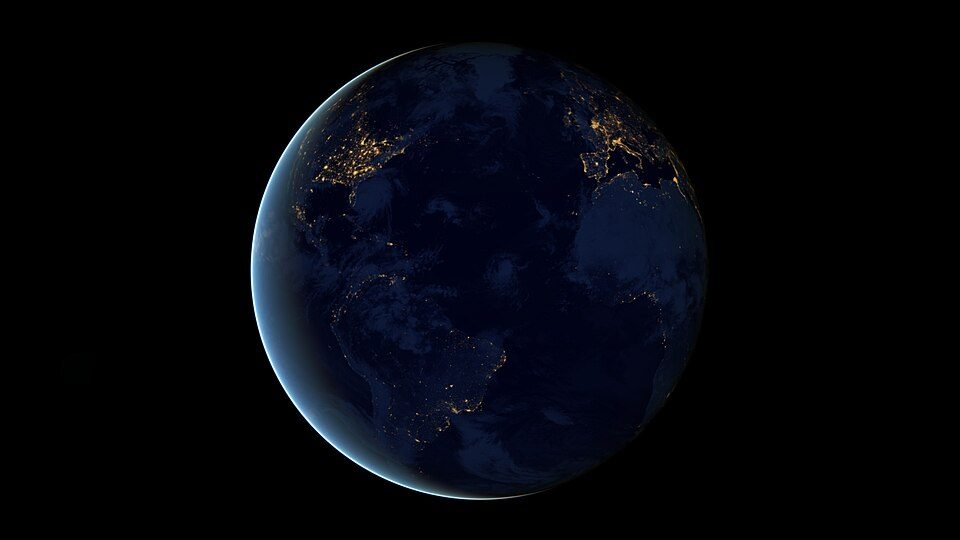
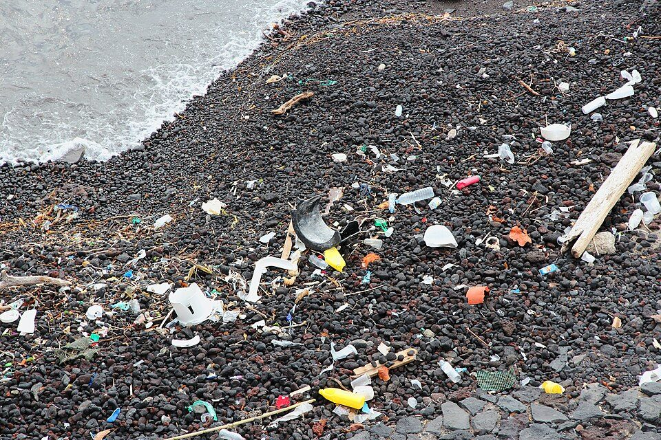
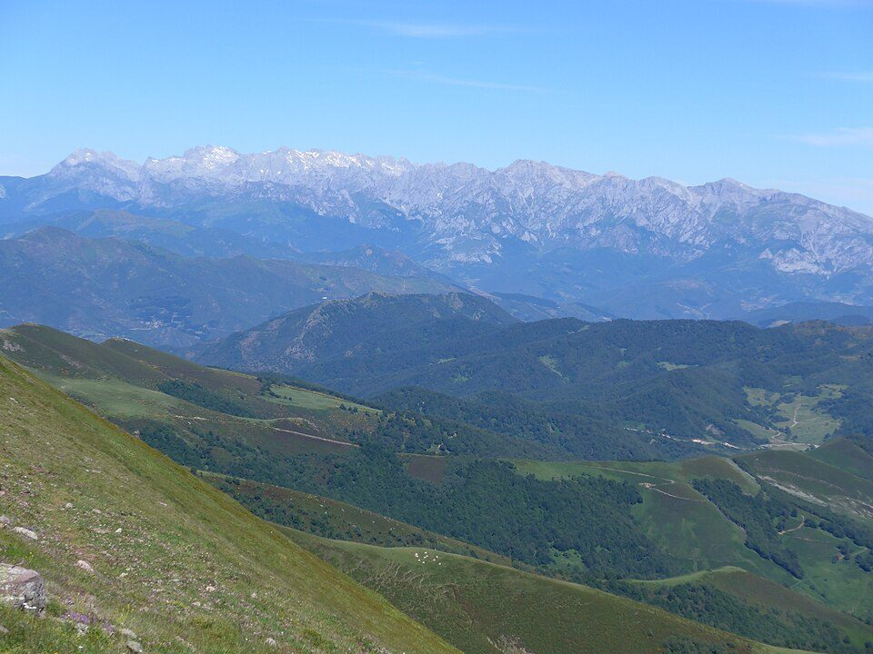

Planet Earth · 6 articles
Our impact
Eight billion people: humanity's footprint on the planet, pollution, plastics, deforestation and the solutions that already work.
No species has ever changed the Earth as much as ours. We have transformed half the land, altered the climate and carried plastic all the way down to the Mariana Trench. But we also know how to fix it, and in many places it is already happening. This section tells both sides of the story.
- Population and human footprintFrom one billion in 1800 to more than eight billion today: how humanity is growing, what the ecological footprint is and why people speak of the Anthropocene.
 Air, water and soil pollutionThe air we breathe, the water we drink and the light that steals our stars: types of pollution, their effects and the successes in fighting it.
Air, water and soil pollutionThe air we breathe, the water we drink and the light that steals our stars: types of pollution, their effects and the successes in fighting it.
Plastics and wasteMore than 400 million tonnes a year: where plastic comes from, where it ends up, garbage patches, microplastics and what works to reduce it. Deforestation and habitat lossWhy forests are disappearing, the products behind it, wildfires and the countries that have managed to bring their trees back.
Deforestation and habitat lossWhy forests are disappearing, the products behind it, wildfires and the countries that have managed to bring their trees back. Energy and renewablesFrom coal to sun and wind: where the energy we use comes from, how renewables work and why Spain is a solar and wind power leader.
Energy and renewablesFrom coal to sun and wind: where the energy we use comes from, how renewables work and why Spain is a solar and wind power leader.
Caring for the planet: solutionsProtected areas, species saved, agreements that work and what each of us can do: the good news from conservation.